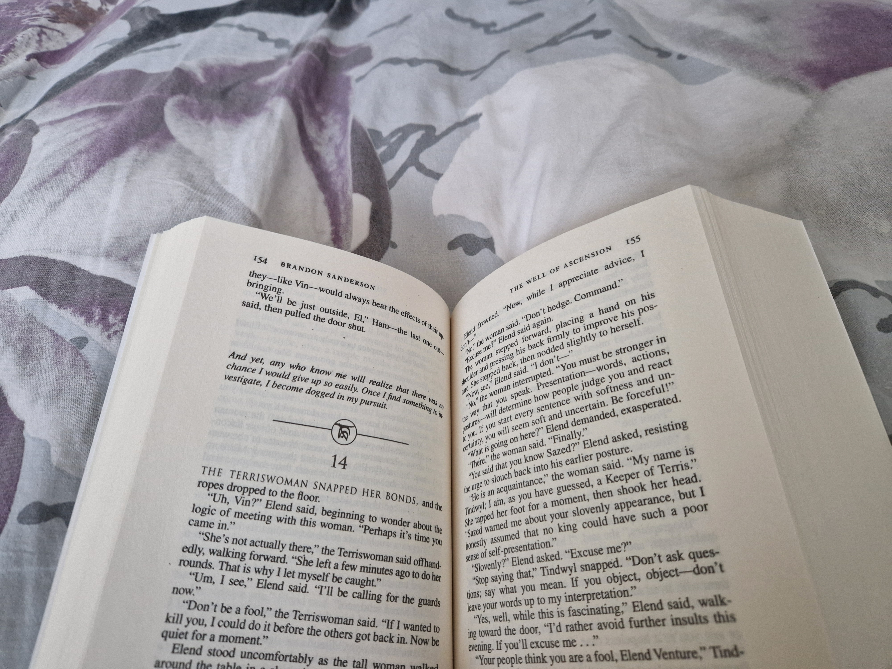
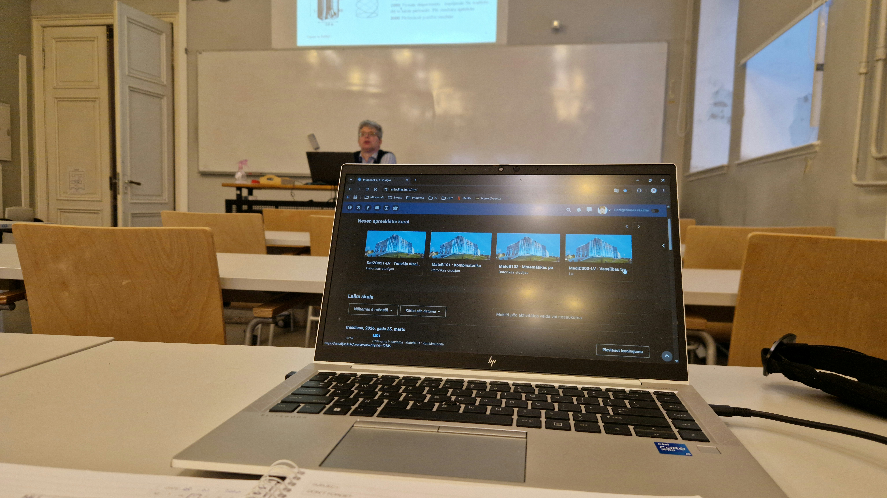
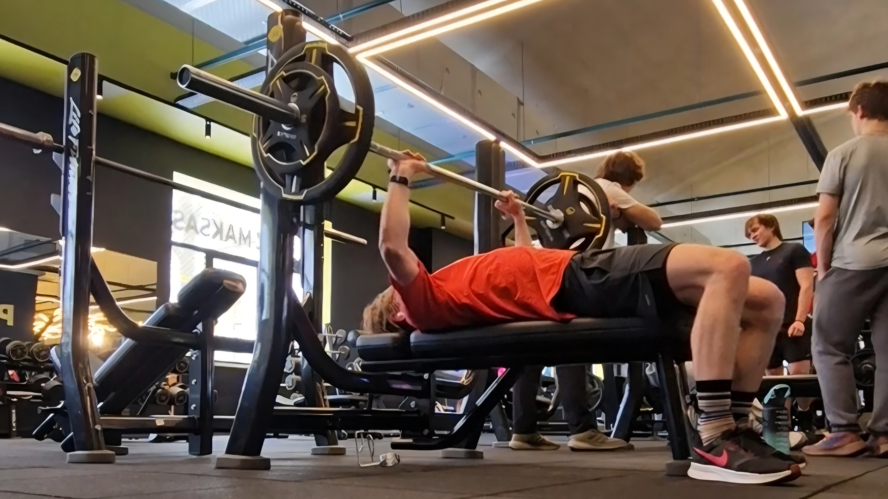
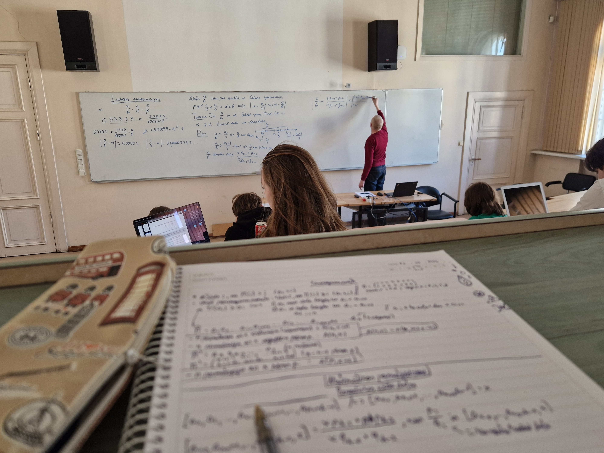
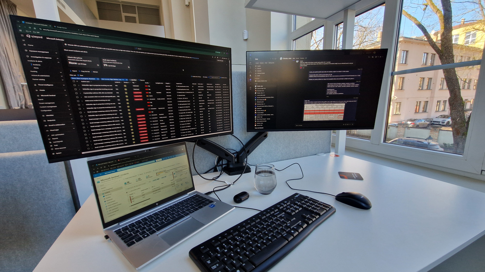

Par mani

Esmu Roberts Saukāns, 3.kursa datorzinātņu students Latvijas Universitātē. Man kopumā patīk matemātika un it īpaši problēmrisināšana, tāpēc esmu izvēlējies šo nozari, jo tā apvieno matemātisko domāšanu ar nedaudz radošumu. Patīk sevi uzturēt labā fiziskajā formā, regulāri apmeklējot sporta zāli spēka treniņiem un veicot kardio vingrinājumus skrienot dabā. Parelēli studijām esmu izmēģinājis internatūras dažādos uzņemumos, bet šobrīd strādāju kā SOC analītiķis uzņēmumā Q.beyond. Brīvajā laikā patīk spēlēt video spēles, skatīties filmas un seriālus, bet nesen ir ļoti iepaticies lasīt grāmatas. Tieši fantāzijas un zinātniskās fantastikas grāmatas šķiet visaizraujošākās. Sapņoju, ka nākotnē varēšu sev iekārtot lielu skapi, kurā skaisti organizētas manas mīļākās grāmatas un dažādas figūriņas. Tad aicinu sekot līdzi manai ikdienai kā datorzinātņu studentam nedēļas garumā.
Pirmdiena

Nedēļa sākas ar agru rītu, jo pirmā lekcija pirmdienā ir fizika, kuras notiek klātienē, tāpēc jāceļās īpaši agri. Mācamies par dažādām tēmam, gan tādām, kuras ir jaunas un šķiet abstraktas, gan arī par tām, kuras jau ir pazīstamas no vidusskolas, bet tiek apskatītas daudz padziļinātākā līmenī. Tās ir manas vienīgās lekcijas pirmdienās, pēc kurām es dodos uz darbu. Darbs ir offisā, bet tas palīdz sevi motivēt un noskaņoties darbam, jo mājās reizēm ir grūti koncentrēties. Darbs arī nav smags un ir ļoti atkarīgs no tā cik daudz kurā dienā ir iekrituši klientu incidenti. Brīvie brīži tiek izmantoti, lai paralēli strādātu pie mājasdarbiem un citiem universitātes projektiem. Vakarā es dodos mājās, bet jau ir vēls un ir tikai tik daudz laika, lai sagatovotos nākamajai dienai. Ja esmu visu produktīvi izdarījis, tad paliek arī nedaudz laiks, lai palasītu grāmatu, kas ļauj atpūsties pirms gulētiešanas un ir mana dienas mīļākā daļa.
Otrdiena

Otrdienā modinātājs neskan vairs tik agri, ļauj nedaudz vairāk pagulēt nekā pirmdienā. Dienas pirmā daļa tiek veltīta lielākoties mājasdarbiem vai lasot grāmatu. Tad dodos uz lekcijām, kuras otrdienās ir divas - algoritmu teorija un matemātikas pamatjēdzieni. Abi kursi ir dziļi teorētiski un prasa lielu iedziļināšanos un koncentrēšanos, lai saprastu par ko runā pasniedzējs. Ļoti teorētisks ir izveidojies man šis semestris, jo kopā mācos 4 kursus, kuri ir diegzan matēmatiski sarežģīti. Tā kā, lai arī neveicu programmēšanu, tik un tā smadzenes tiek piepūlētas ne pa jokam. Pēc 2 prātu svilinošām lekcijām es dodos uz sporta zāli svilināt savus muskuļus, kas ļauj atslēgties no studiju stresa. Mana sporta zāle piedāvā ne tikai dušas, bet arī saunu, ko esmu ļoti iecienījis. Tāpēc sporta zāles apmeklējums ir dziļi patīkama dienas daļa, bet izvēršas par salīdzinoši garu pasākumu. Pēc tam es esmu mentāli un fiziski noguris un dodos uz mājām. Ir jau vakars un atliek tikai palasīt grāmatu un doties gulēt.
Trešdiena

Rīts sākas agri ar kombinatorikas lekciju, jā tik tiešam matemātika nekad nebeidzas šajā semestrī. Mācamies par dažādiem kopu un klašu sadalījumiem un to kā atpazīt to dāžādos veidus. Gribētu šeit pieminēt, ka kurss tiešām nav elementārs un viegli saprotams, bet profesors Juris Smotrovs ir lielisks pasniedzējs un spēj izskaidrot ļoti teorētiskas tēmas tā, ka tās kļūst daudz skaidrākas. Pēc lekcijas es atkal dodos uz darbu, kurš salīdzinot ar Kombinatorikas lekcijām man ir kā atpūta, jo nav tik šausmīgi sarežģīts kā Stirlinga 2. kārtas skaitļi. Protams, par darbu man arī maksā algu, kas padara darba uzdevumus vēl patīkamākus. Pēc darba es atkal dodos uz sporta zāli. Regulāri veicu īsus video ierakstus no treniņiem, jo kursam Sporta Aktivitātes ir semestra beigās jāiesniedz atskaite par veiktajām aktivitātēm. Attēlā var redzēt kadru no grūšanas uzdevuma video.
Ceturtdiena

Ceturtdiena ir brīvāka, tāpēc tā sākas nedaudz vēlāk, ļaujot izgulēties. Pirmājā dienas daļā dodos uz matemātikas pamatjēdzienu lekciju, kurā mums māca par dažādām matemātikas tēmām. Lielākoties par tādām, kuras līdz šim nav dzirdētas, bet tik un tā šķiet fundementālas un svarīgas kopējā matemātikas izpsatnē. Interesanti, ka šeit pasniedzēji mainās, jo katram ir piešķirta viena vai divas tēmas, tāpēc šī kursa laikā ir bijusi iespēja iepazīties arī ar pasniedzējiem, par kuriem esmu tikai dzirdējis. Pēc lekcijas dodos mājas un izeju uz savu iknedēļas skrējienu pa netālu esošo mežu. Tādējādi uzturot ne tikai muskuļus, bet arī sirdi labā fiziskajā formā. Kā arī tas ir lielisks veids, kā atslēgties no ikdienas un baudīt mūziku un dabu. Vispatīkamākā daļa ir pēcskrējiena gandarījums. Vēl jau ir pēc pusdiena, tāpēc šeit ir laiks uzspēlēt video spēles ar draugiem, vai ja draugi nespēlē tajā dienā, tad var kārtīgi palasīt grāmatu. Ja nu esmu iekavējis tad, protams, var arī izpildīt aizkavējušos mājasdarbu uzdevumus.
Piektdiena

Nedēļa noslēdzas ar attālinātu rīta lekciju sporta aktivitātēm, kur mums stāsta par to kā pareizi veikt dāžādus vingrinājumus, par to kā pareizi iesildīties un atsildīties pirms un pēc treniņiem. Reizēm arī notiek praktiskie klātienes treniņi kopā ar pasniedzēju. Pēc tam man ir laiks pilnai dienai ofisā, lai sociālizētos un satiktu kolēģus. Īpaši man patīk uzspēlēt novusu, jo tas man labi padodas un, manuprāt, ir ļoti labs balanss starp prasmīgumu un veiksmi, kas to padara interesantu arī tiem, kas nav tik pieredzējuši. Vēl ko nepieminēju par ofisu ir, ka tajā ir stāvošie galdi, ko cenšos izmantot pēc iespējas biežāk, jo gribu saglabāt taisnu muguru un labu stāju. Kā arī ir divi lieli monitori, kas padara vairāku ekrānu darbu krietni ērtāku nekā tas būtu mājas. Protams, nepieminēsim kafiju, augļus un citus našķus ofisā. Pēc darba es atkal dodos uz sporta zāli, pēdēko reizi nedēļā un pēc tam var sākties brīvdienas, kurās es bieži pavadu daudz laika ar ģimeni un draugiem.